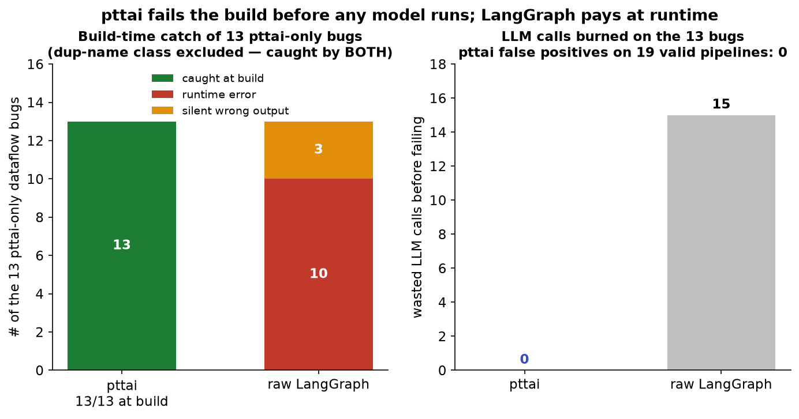
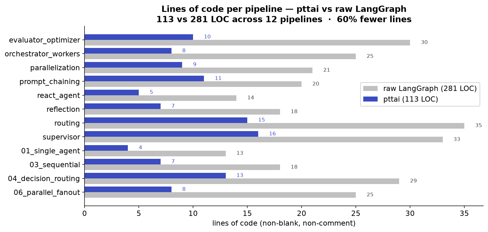

pttai vs. raw LangGraph¶
pttai is a thin declarative layer over LangGraph. The headline is not the
> wiring syntax — it is that pttai statically validates a graph's dataflow at
build time and fails the build on a class of bugs that raw LangGraph happily
compiles and only surfaces at runtime (if at all). The line-count reduction is
real but secondary; the validator is the thing you cannot get from
create_react_agent or hand-wired StateGraph code.
1. The validator: bugs caught before invoke¶
Raw LangGraph's compile() does a structural check (are the edges/nodes wired
into a graph?) but does no state-dataflow analysis: it does not know that a
node reads a key no upstream node has written, that a routing branch dangles, or
that two parallel nodes clobber the same reducer-less key. Those become runtime
KeyError / InvalidUpdateError — or silent wrong behavior — on the unlucky
input that first exercises the path.
pttai runs a forward may/must dataflow fixpoint over the compiled edge list
in AgenticGraph.validate() and raises at construction. Every error below is
reproduced from the actual framework (see pttai/validation.py,
pttai/graph.py); the messages are verbatim.
a. Read-before-write of a state key¶
write = AgentNode(name="write", llm=get_llm(),
node_prompt="use {plan}", reads=["plan"], writes=["messages"])
planner = AgentNode(name="planner", llm=get_llm(),
node_prompt="plan", reads=["messages"], writes={"plan": str})
write > planner # the producer of `plan` runs LAST
AgenticGraph(start_node=write, end_nodes={planner})
pttai raises GraphValidationError:
[error] write: reads computed key 'plan' but no upstream node produces it before
this node (produced by: ['planner'], none of which are upstream); available keys
here: ['log', 'messages', 'token']
Raw LangGraph: compiles fine; state["plan"] is a KeyError at runtime on the
first invoke.
b. Dangling decision branch (a choice with no .child)¶
d = DecisionNode(name="d", llm=get_llm(), node_prompt="pick", choices=["a", "b"])
h = AgentNode(name="h", llm=get_llm(), node_prompt="handle")
d["a"] > h # choice "b" is never wired
AgenticGraph(start_node=d, end_nodes={h})
pttai raises GraphValidationError:
Raw LangGraph: if your add_conditional_edges path map omits "b", the model
returning "b" dead-ends at runtime — a bug that hides until that branch is hit.
c. A non-end node whose .child is None (pttai DSL strictness — NOT a LangGraph bug)¶
a = AgentNode(name="a", llm=get_llm(), node_prompt="one")
b = AgentNode(name="b", llm=get_llm(), node_prompt="two")
a > b # forgot to declare b as an end node
AgenticGraph(start_node=a, end_nodes=set())
pttai raises ValueError at build:
This is not a LangGraph defect. In raw LangGraph a node with no outgoing edge
is a legal implicit terminal: the graph compiles and runs to a normal halt
(verified empirically on LangGraph 1.2.x — compile() does not raise and
invoke() returns without error). pttai rejects it only because its DSL
requires every terminal to be declared in end_nodes. It is a useful
guardrail, but it is pttai DSL strictness, not a bug LangGraph misses — so it
is excluded from the differentiator numbers below.
d. Duplicate node names — caught by BOTH frameworks (not a differentiator)¶
a = AgentNode(name="dup", llm=get_llm(), node_prompt="one")
b = AgentNode(name="dup", llm=get_llm(), node_prompt="two")
a > b
AgenticGraph(start_node=a, end_nodes={b})
pttai raises ValueError at build:
Duplicate node name 'dup': two distinct nodes share this name. Node names must be
unique within a graph.
Raw LangGraph also catches this at build: add_node("dup", ...) a second
time raises ValueError('Nodedupalready present.'). So this class is not a
pttai-only advantage — both frameworks reject it at construction. pttai's message
is friendlier, but the guarantee is the same. (This was previously described here
as a silent overwrite; that was wrong for LangGraph 1.0 — corrected after
measuring it in eval/bugbench/.)
There are more genuine pttai-only-at-build catches (the cyclic / loop-carried read-before-write case; concurrent writes to a reducer-less key across parallel branches; a
node_promptplaceholder with no matching scalar read) — all inpttai/validation.py::collect_issues, and all measured ineval/bugbench/. Of the four classes above, two (a, b) are caught only by pttai at build while raw LangGraph surfaces them at runtime after wasting model calls; the dead-end (c) is pttai DSL strictness, not a LangGraph bug (legal implicit terminal); and duplicate names (d) is caught by both.
Measured over the full eval/bugbench/ corpus (17 buggy + 19 valid pipelines),
pttai catches 12/12 pttai-only dataflow bugs at build with 0 false
positives; raw LangGraph catches 0 of those at build (all 12 surface at
runtime) after burning 8 model calls — a simulated, worst-case-ordered
figure from the offline fake LLM, not measured real-model cost (see
eval/bugbench/README.md). The dead-end-node
class is excluded from these numbers because it is legal LangGraph behavior, not
a defect:

Regenerate from the committed data with python figures/make_charts.py.
2. Lines of code, three architectures¶
Same workflow, both ways, from the runnable side-by-side files in
examples/architectures/. Each file has a pttai_version() and a
langgraph_version() with identical behavior. LOC = non-blank, non-comment
source lines in the function body (this includes the one in-function import
line and the single trailing demo invoke/return on both sides, so the
boilerplate cancels and the delta is clean). Counted programmatically via ast,
not by hand.
| Architecture | Example file | pttai LOC | raw LangGraph LOC | reduction |
|---|---|---|---|---|
| ReAct tool loop | examples/architectures/react_agent.py |
5 | 14 | ~64% |
| Prompt chaining | examples/architectures/prompt_chaining.py |
11 | 20 | ~45% |
| Routing (gather→route) | examples/architectures/routing.py |
15 | 35 | ~57% |
Across all 12 measured pipelines (eval/loc_results.csv) the totals are 113
vs 281 LOC — ~60% fewer lines:

Cognitive-complexity notes (not just line count)¶
- ReAct tool loop — pttai: one
AgentNode(tools=[...])is the loop. Raw LangGraph: you must know theToolNode+tools_conditionprebuilts, add the conditional edge, and remember thetools → modelloop-back edge. The concept count, not just the LOC, is what trips people up. - Prompt chaining — pttai:
extract > gatethengate["pass"] > expand > finalizereads like the diagram. Raw LangGraph: astep(prompt)node factory, fouradd_nodes, and manually wiredadd_edge/add_conditional_edgesfor the gate. - Routing (gather-then-route) — the widest gap, and the most instructive: a
tool-gathering phase and a structured-output routing phase can't share one
raw-LangGraph node, so the hand-written version needs a separate
gathernode, aToolNode, a synthetic__route__pass-through node, and two sets of conditional edges. pttai folds both phases into oneDecisionNode(tools=...).
3. Why not create_react_agent?¶
create_react_agent collapses exactly one pattern (the ReAct loop) into one
call — and for that single pattern the LOC gap above is smallest. It gives you
nothing for prompt chaining, routing, evaluator-optimizer, orchestrator-workers,
or any multi-node topology, and it does no build-time dataflow validation of
a custom state schema. pttai keeps the one-node-per-loop ergonomics and
generalizes to arbitrary topologies and validates the dataflow — while
compiling down to a plain LangGraph StateGraph, so streaming, async,
checkpointers, and LangSmith all still work underneath.